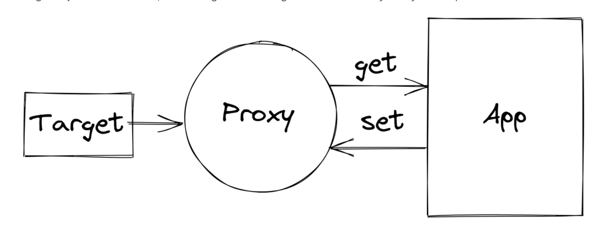

A JavaScript Proxy is:
- An object that wraps another object (target)
- Intercepts operation performed on it allowing custom behaviour.

const target = {
message1: "hello",
message2: "everyone",
};
const handler = {};
const proxiedTarget = new Proxy(target, handler);